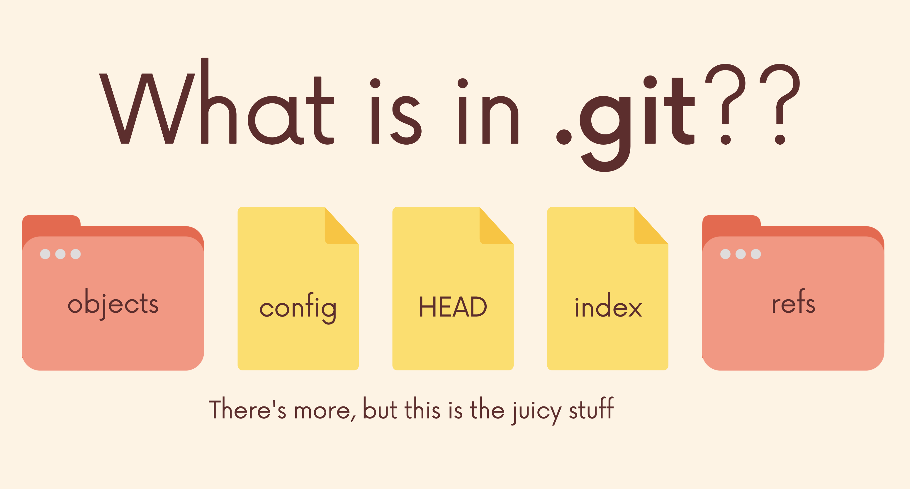

Git 101: Thư mục .git (P5)

File config chứa các cấu hình mặc định cho dự án hiện tại. Mặc định, nếu không tìm thấy trong file này, git sẽ tự động lấy các giá trị mặc định hoặc trong file config global (tùy từng môi trường mà file này nằm ở các vị trí khác nhau, với linux hoặc macos thì có thể tìm theo đường dẫn ~/.gitconfig).
Ví dụ, để cài đăt tên hoặc email của user cho riêng repo này, mà không ảnh hưởng đến repo khác.
// gõ lệnh trên terminal
git config --local user.email "duongdt@gmail.com"
git config --local user.name "Đặng Tuấn Dương"
// hoặc sửa trực tiếp trong file .git/config
[user]
email = duongdt@gmail.com
name = Đặng Tuấn Dương
Thư mục refs lưu thông tin các đường dẫn của repo. Trong refs sẽ có 2 thư mục con là heads, và tags. heads chứa các file ứng với tên các branch, lưu commit mà branch đó đang trỏ tới. Thư mục tags lươu các file ứng với tên tag, lưu commit hash mà tag đó đang trỏ tới.
Khái niệm HEAD đã được trình bày ở bài trước. File HEAD là chứa đường dẫn đến branch hoặc mã commit mà HEAD đang trỏ tới.
File Index là 1 file binary, chứa danh sách các file đang được git theo dõi. Danh sách này chỉ gồm tên file, mà 1 số thông tin của file, chứ không chứa nội dung file.
Thư mục Objects chứa thông tin các object của git. Git có 4 loại object:
- blob
- tree
- commit
- annotated tag
Có thể hiểu Git lưu dữ liệu dưới dạng key-value. Mỗi khi lưu 1 commit, chúng ta sẽ nhận lại được 1 đoạn mã, mã này sẽ là duy nhất trong repo. Với đoạn mã này, chúng ta có thể lấy thông tin của commit. Mã này được tạo ra nhờ các hàm băm (hash function).
Hashing là quá trình biến đầu vào là một nội dung có kích thước, độ dài bất kỳ rồi sử dụng những thuật toán, công thức toán học để biến thành đầu ra tiêu chuẩn có độ dài nhất định. Quá trình đó sử dụng những Hàm băm (Hash function).

Blob là 1 dạng object được git sử dụng để lưu nội dung của file. Lưu ý là blob chỉ lưu nội dung, ngoài ra không lưu bất kì thông tin gì của file.

Tree được git sử dụng để chứa nội dung của thư mục. Các thông tin được lưu là kiểu: blob hay tree, mã băm, tên file hoặc thư mục.

Và Commit. Object quan trọng nhất trong git. 1 commit chứa tree đầu tiên là thư mục gốc, các commit cha, tên, email người commit, và dĩ nhiên là nội dung commit.


Tham khảo: